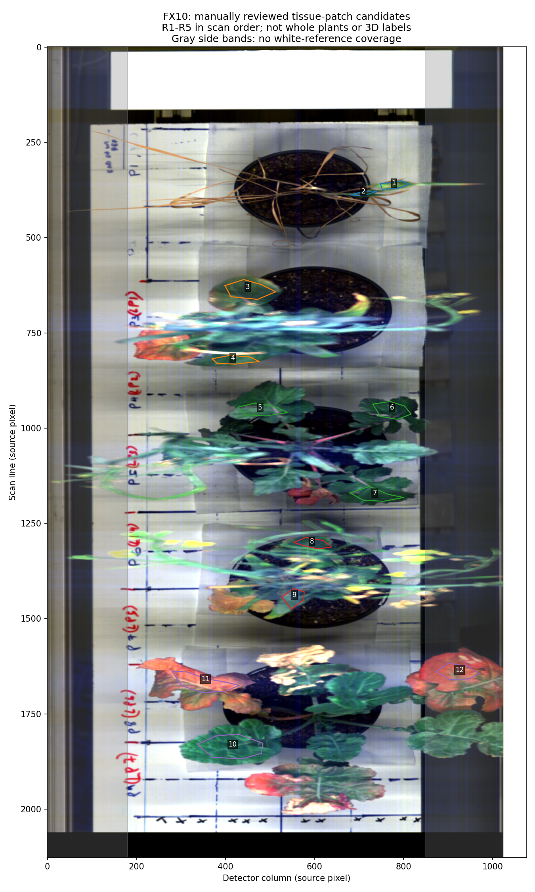
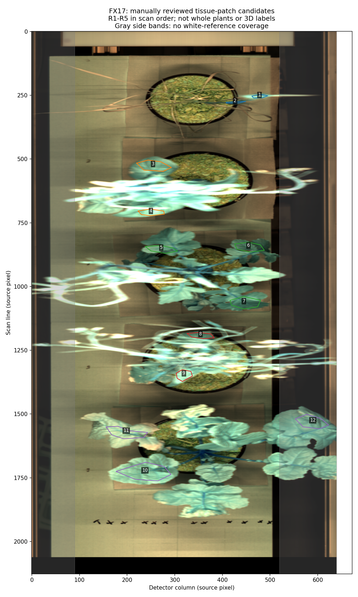
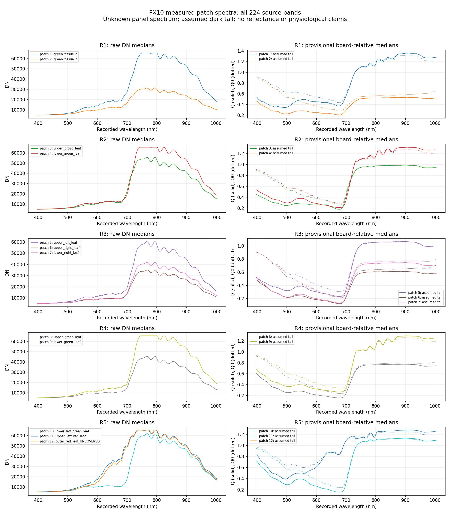
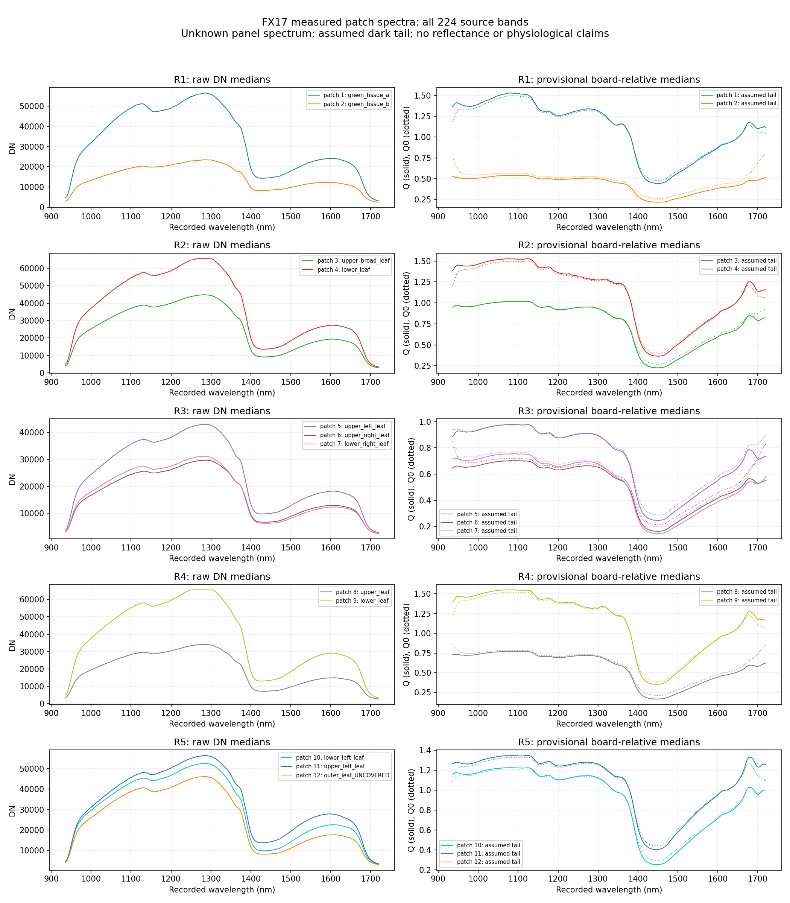
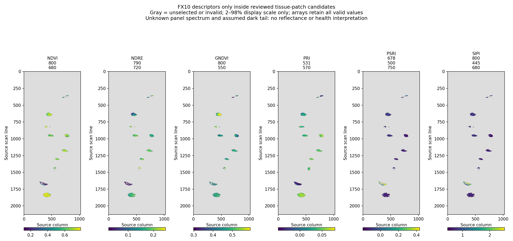

<script src="/research-assets.js"></script><!doctype html><html lang="en"><meta charset="utf-8"><meta name="viewport" content="width=device-width,initial-scale=1"><title>Measured spectral follow-through</title><style>body{font:16px/1.6 system-ui,sans-serif;color:#182434;background:#edf2f6;margin:0}main{max-width:1300px;margin:auto;padding:36px}h1{font-size:32px;line-height:1.2}.note{background:#fff0d4;border-left:5px solid #b2730d;padding:20px}figure{background:white;padding:20px;margin:20px 0;border-radius:10px}figcaption{font-weight:700;margin-bottom:12px}img{display:block;width:100%;height:auto}.grid{display:grid;grid-template-columns:1fr 1fr;gap:18px}.grid figure{margin:0}a{color:#075493}section{background:white;padding:22px;margin:24px 0;border-radius:8px}pre{white-space:pre-wrap}@media(max-width:700px){main{padding:16px}.grid{display:block}}</style><main><h1>Measured spectral follow-through</h1><p>28 September plant run 003 · 7 October 2026 analysis</p><div class="note"><strong>13,343 measured source-pixel spectra × 224 bands.</strong> Independent camera-space tissue patches across five specimen regions. Unknown white-board spectrum and unconfirmed dark tail: no calibrated reflectance or health interpretation. <strong>3D spectral fusion remains underdetermined.</strong></div><section><h2>What is now available</h2><p>24 manually reviewed patch polygons, all-band DN/Q/Q0 spectra with quality flags, full-resolution masked selected bands and six FX10 descriptors, CSV summaries, exact source coordinates and provenance. R1–R5 indicate scan order, not verified plant identities. No spectra are joined across cameras.</p><p><a href="REPORT.md">Detailed report and patch counts</a> · <a href="spectral_followthrough_summary.json">Machine-readable status</a> · <a href="mapping_workspace_README.md">Offline mapping pathway</a> · <a href="mapping_workspace/mapping_config.json">Missing calibration configuration</a> · <a href="mapping_workspace/observed_planar_controls.csv">205 recorded target observations</a></p></section><div class="grid"><figure><figcaption>FX10 reviewed tissue patches</figcaption><a href="fx10_reviewed_patch_overlay.png"></a></figure><figure><figcaption>FX17 reviewed tissue patches</figcaption><a href="fx17_reviewed_patch_overlay.png"></a></figure></div><figure><figcaption>FX10 measured full spectra</figcaption><a href="fx10_full_spectra_summary.png"></a></figure><figure><figcaption>FX17 measured full spectra</figcaption><a href="fx17_full_spectra_summary.png"></a></figure><figure><figcaption>FX10 masked exploratory descriptors</figcaption><a href="fx10_reviewed_patch_indices.png"></a></figure><section><h2>Measured data</h2><ul><li><a href="fx10_measured_full_spectra.npz">FX10: Full measured spectra</a></li><li><a href="fx10_patch_spectral_summary.csv">FX10: Patch spectral CSV</a></li><li><a href="fx10_all_patch_pixels_selected_bands.npz">FX10: All patch pixels: selected bands and indices</a></li><li><a href="fx10_full_band_reference_profiles.npz">FX10: All-band reference profiles</a></li><li><a href="fx10_summary.json">FX10: Detailed provenance</a></li><li><a href="fx17_measured_full_spectra.npz">FX17: Full measured spectra</a></li><li><a href="fx17_patch_spectral_summary.csv">FX17: Patch spectral CSV</a></li><li><a href="fx17_all_patch_pixels_selected_bands.npz">FX17: All patch pixels: selected bands and indices</a></li><li><a href="fx17_full_band_reference_profiles.npz">FX17: All-band reference profiles</a></li><li><a href="fx17_summary.json">FX17: Detailed provenance</a></li></ul><p>Keep each array with its metadata sidecar and embedded warning. Invalid board-relative values are NaN; out-of-reference raw tissue data remains present.</p></section></main></html>